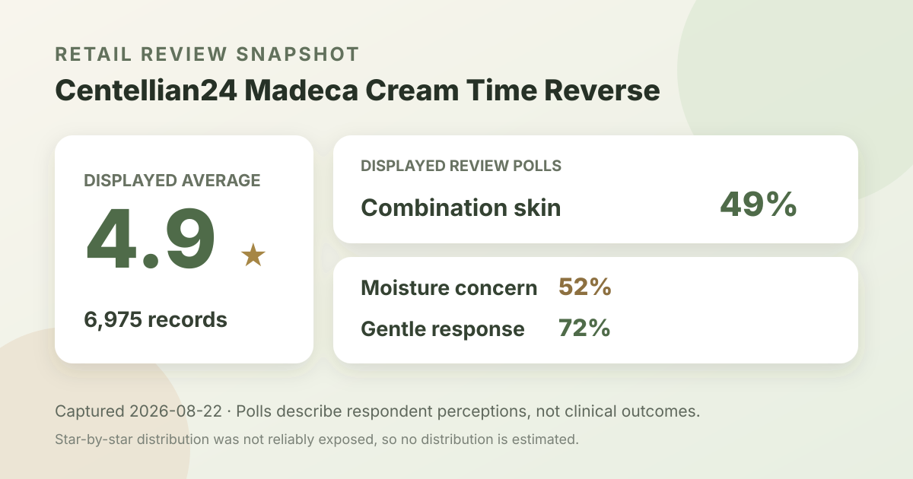
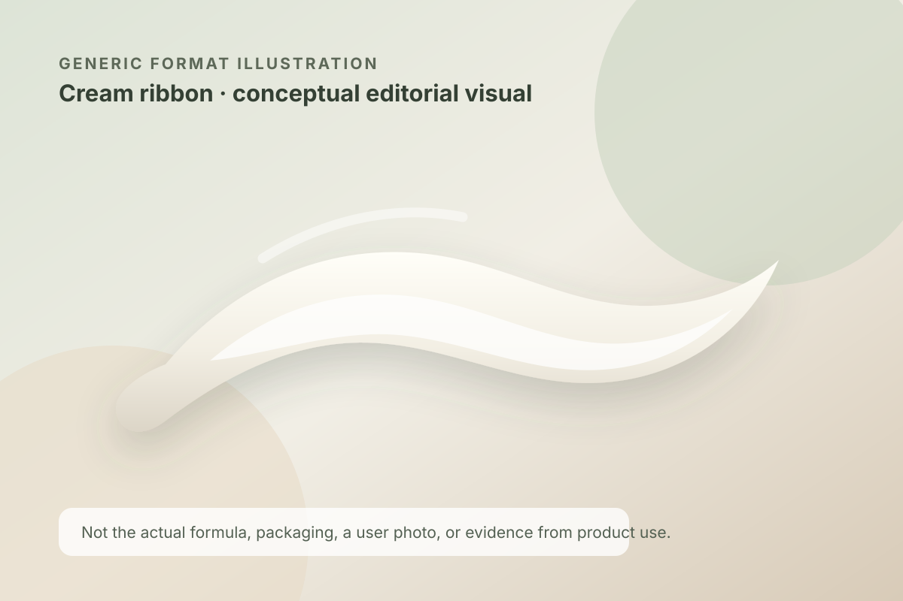

Data captured August 22, 2026. This article uses only the retailer's displayed aggregate rating, review count, polls, price, pack description, and anonymous summary themes. No individual review, reviewer name, product photo, or user photo is reproduced or translated. I did not test the product on my own skin.

The short version: the listing showed 4.9 out of 5 from 6,975 review records. Its headline polls displayed combination skin at 49%, moisture as the leading concern response at 52%, and a gentle response at 72%. These signals support closer shopping research; they do not prove calming, barrier repair, or treatment efficacy.
A 4.9 average across 6,975 displayed records is a strong satisfaction signal inside Olive Young Korea's review system. The large count makes the score more informative than a nearly perfect average built from a handful of submissions, because one extreme rating has less power to move the headline number.
Even so, the average is not a standardized experiment. Retail reviewers can use different amounts, routines, climates, cleansers, actives, and sunscreens. Their expectations and time horizons also vary. The aggregate number does not isolate the cream as the cause of any observed change, verify every reviewer's identity, or show how people with a particular diagnosis responded.
The captured review summary did not reliably expose the shares for five, four, three, two, and one stars. A 4.9 average indicates that high ratings carry substantial weight, but calculating exact shares from the rounded average would create false precision. This article therefore reports the verified average and total only.
Combination skin was the largest displayed skin-type response. This tells us who was well represented in the poll, not that the cream works better for combination skin.
Moisture was the leading visible concern response. It records what respondents were looking for; it does not measure water content, barrier function, or duration of an effect.
A majority selected the gentle option. That subjective perception cannot rule out stinging, allergy, clogged pores, breakouts, or irritation for an individual.
These percentages belong to separate questions. They should not be added together or converted into a single score. The captured summary also did not show each poll's respondent count, so translating 49%, 52%, or 72% into numbers of people would be misleading.

The retailer's displayed automated summary grouped recent positive discussion into three broad themes: perceived calming or reduced-looking redness, a rich moisturizing or nourishing feel, and value from sale pricing and added items. Those are paraphrased aggregate themes. They are not translated excerpts, medical observations, or proof that the product caused a result.
The first theme deserves especially careful wording. A shopper may describe skin as looking calmer, but a retail summary cannot diagnose inflammation or establish that a formula treated a condition. It also cannot distinguish the cream's role from changes in weather, routine, stress, or other products. If persistent redness is painful, worsening, or medically concerning, review data is not a substitute for qualified care.
The moisture-rich theme is more useful as a texture question than as a guaranteed benefit. Someone who likes substantial night creams may view richness positively, while someone who layers several products or dislikes residue may not. The summary did not provide standardized measurements of spread, absorption, occlusion, or finish, so this analysis does not convert the theme into a factual texture claim.
Olive Young also displayed that 86% of recent reviewed material was positive according to its automated summary. That is a retailer-generated sentiment classification of a recent subset, not the share of all 6,975 records that experienced calming or moisture, and not a clinical response rate.
At capture time, the Korea page displayed ₩17,900 and a 52% markdown from a displayed ₩38,000 reference price. The product title described a 50 ml cream accompanied by two 15 ml minis and three derma masks. The same page showed a 100 ml price basis that appears to reflect the cream volume in the set, but pack accounting can vary.
That promotion is a dated shelf snapshot, not a standing price promise. Before comparing value, verify the exact full-size and mini volumes, whether masks are still included, whether a regional seller uses the same product name, and whether shipping or taxes change the total. A large displayed discount does not by itself establish that the bundle is the best fit.
“Madeca Cream Time Reverse” is the listing name. It can help identify the product, but it does not disclose an ingredient dose or prove a time-reversing effect. This article does not estimate centella-related ingredient levels, infer active concentration from marketing language, or claim that the formula repairs a barrier, reverses aging, or treats redness.
I did not capture and verify a complete, region-specific ingredient list for this analysis. I therefore do not claim that the cream is fragrance-free, alcohol-free, non-comedogenic, pregnancy-compatible, or suitable for eczema, rosacea, acne, allergy, or another condition. Check the current package and official regional disclosure, because formulas and labels can differ or change.
Follow the directions on the product in your hand rather than a routine invented from aggregate reviews. If you are prone to reactions, introducing one new item at a time and first trying a small area can make an unwanted response easier to notice, although it cannot guarantee safety. Stop if you experience a concerning reaction and seek professional help when appropriate.
Decide what you actually need to learn: whether the finish works under sunscreen, whether the cream feels too rich in your climate, whether the scent is acceptable, or whether the bundle format makes sense. Compare those questions with a product you already tolerate. Popularity and a 4.9 average can justify investigation, but neither creates a reason to replace a routine that already works.
Combination skin was the largest displayed skin-type response at 49%. That gives useful audience context, but it does not prove better performance for combination skin than for dry or oily skin.
The retailer's visible poll showed a 72% gentle response. Individual tolerance still depends on the full formula, amount, routine, environment, and personal history.
No. The score summarizes retail satisfaction across 6,975 displayed records. It does not measure redness, barrier function, effect size, or causation, and it has no control group.
No. It is a brand-neutral editorial illustration of a general cream format. It does not depict the formula or prove its color, richness, spread, absorption, or finish.
No. It is the promotional configuration shown on the captured Korea listing. Confirm current contents, stock, seller, formula, and checkout price before buying.
Centellian24 Madeca Cream Time Reverse has a substantial retail feedback base: 4.9 stars from 6,975 displayed records, plus visible poll context on combination-skin representation, moisture interest, and perceived gentleness. Its number-two skincare sales position on the capture date made it the highest-ranked valid product not already covered by this site.
The defensible conclusion remains modest. Many shoppers reported a positive experience within this retailer's system, and the displayed themes point to comfort, richness, and promotional value as useful areas for further checking. The data does not establish treatment efficacy, ingredient dose, universal gentleness, or suitability for a medical concern.
← All K-Beauty Data Desk reviews · Best-seller rankings · Skin-poll guide · About & methodology
Published by The K-Beauty Data Desk · Aggregate data captured 2026-08-22. The source data does not independently verify every reviewer's identity. No individual review, name, product photo, or user photo is reproduced or translated, and I did not test the product. I received no free product and am not paid or approved by the brand. Check the dated source listing.
Data basis: the live Olive Young Korea skincare ranking and product/review screens captured 2026-08-22. The product title, rating, review count, price, promotional pack, poll shares, and retailer-generated aggregate themes are source facts. The interpretation and cautions are editorial.